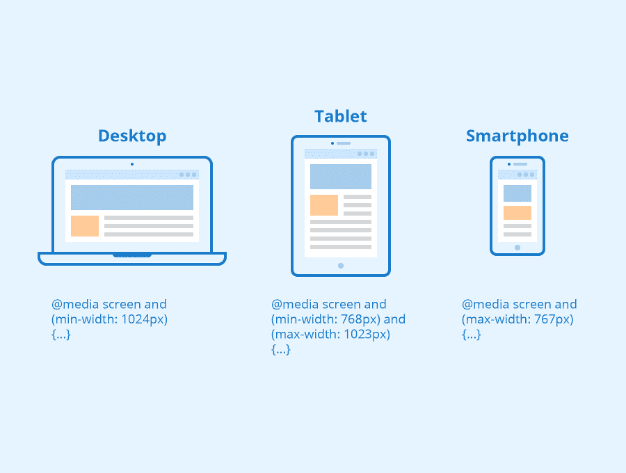

Media Queries Las Media Queries son una característica de CSS3 que permite aplicar estilos diferentes según las características del dispositivo,
como su anchura, altura o resolución. Esto es esencial para crear sitios web que se adapten correctamente a dispositivos móviles,
tabletas y pantallas de escritorio.